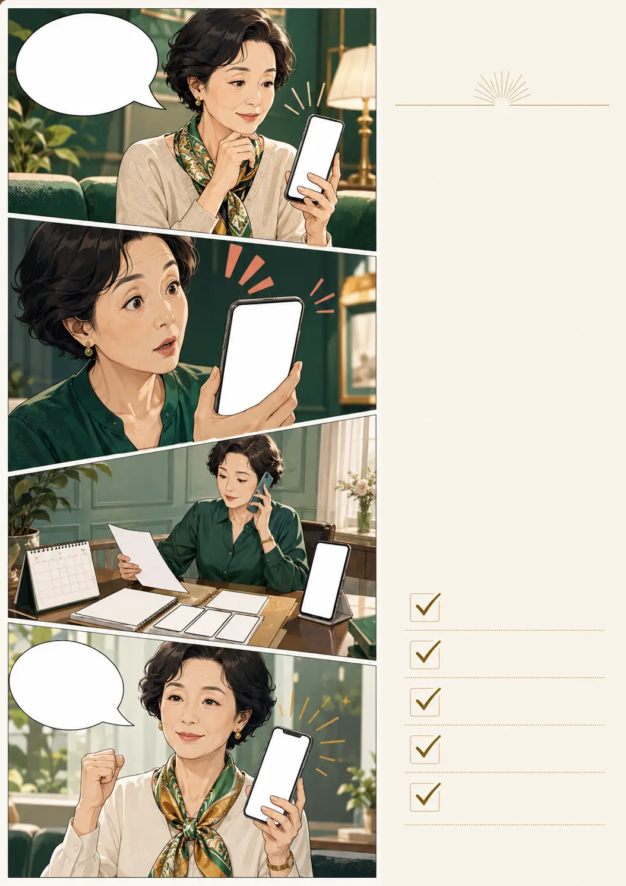

2026.08 · VOL.01 · WEEKLY CONSUMER INTELLIGENCE
소비자ON
가격표 뒤에 숨은
진짜 조건을 읽다
- 반전 실험 1+1이 낱개보다 비싼 순간
- 사건형 웹툰 무료체험 뒤 자동결제 탈출기
- 실전 파일 반품을 거절당하지 않는 증거 5개
NCC DIGITAL WEEKLY · 2026.08.28
가격표 뒤에 숨은
진짜 조건을 읽다
이번 호는 매일 반복되는 구매에서 바로 사용할 수 있는 확인법을 모았습니다. 광고 문구보다 계약조건을, 할인율보다 최종 결제금액을 먼저 확인하는 습관이 핵심입니다.
“사기 전에 확인하고, 결제한 뒤에는 기록을 남기세요.”
할인율은 기준가격에 따라 커 보일 수 있습니다. 상품을 고르기 전 같은 용량·같은 구성·배송 완료 기준으로 최종금액을 맞춰보세요.
편집실 한마디 싸게 많이 사서 남기는 것보다, 필요한 만큼 제값에 사서 모두 쓰는 편이 더 경제적일 수 있습니다.
단순변심인지 하자·오배송인지 구분해 사유를 글로 남기세요.

무료라니당황하지 말고 결제일·금액·가입 화면·해지 조건을 먼저 모으세요.
과장광고가 의심되면 제품명·판매자·광고화면·구매일을 기록하고 식약처 또는 1372 상담자료와 비교하세요.
지역혜택의 진짜 가치 자주 이용하는 곳에서 필요한 만큼 쓸 때 커집니다. 혜택 때문에 불필요한 이동이나 추가구매를 하지 마세요.
건강·숙박·문화 프로그램 신청 기회
회원 대상 상품·서비스 제공조건
음식점·카페·생활서비스 혜택
옵션·모집·결제·배송 확인
규격·옵션·구성·단가
기간·목표·성립 기준
시점·취소·환불 방법
예정일·배송비·지연
소비자ON은 가격·계약·결제·지역혜택을 쉽고 정확하게 전합니다.
광고·협찬은 명확히 표시하며 계약되지 않은 상품과 혜택은 게재하지 않습니다.CONSUMER ON ARCHIVE